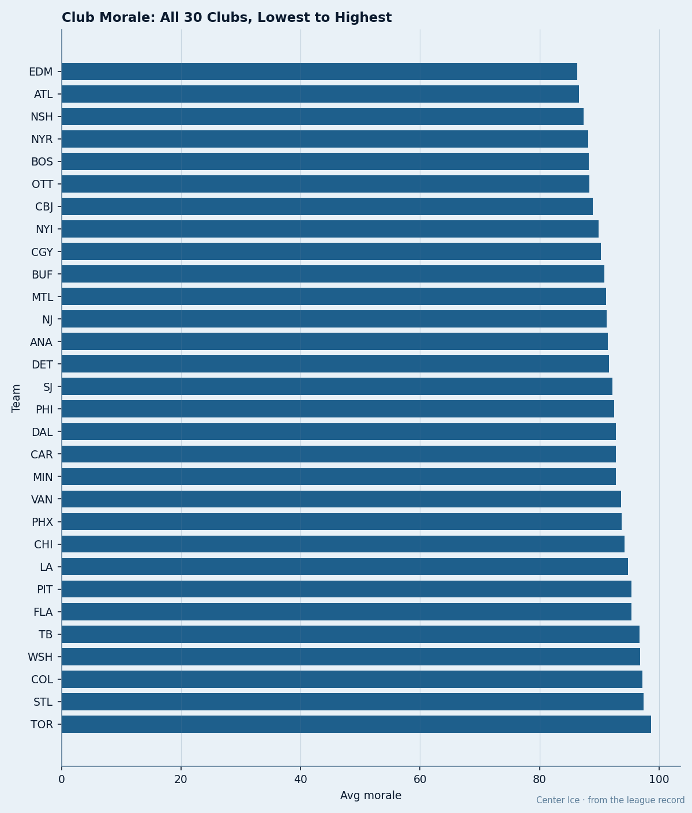

NJ
NJ91 to 100: Every Man on the Blues' Roster Is Happy, and They Missed the Playoffs by 7
The second-highest club morale in the league belongs to the 9th seed in the West. The range is 9 points and the team still couldn't win 93.
 Doug ReimerAnalytics editor, ex-video coach · The Slot Report
Doug ReimerAnalytics editor, ex-video coach · The Slot Report
The piece
 St. Louis Blues carries the second-highest club morale in the league at 97.4, behind only
St. Louis Blues carries the second-highest club morale in the league at 97.4, behind only  Toronto Maple Leafs at 98.6. The Blues finished 9th in the West on 86 points, 7 behind the 8th-seeded
Toronto Maple Leafs at 98.6. The Blues finished 9th in the West on 86 points, 7 behind the 8th-seeded  Phoenix Coyotes who took the first seed in the conference to a Game 7 before being bounced in Round 2.
Phoenix Coyotes who took the first seed in the conference to a Game 7 before being bounced in Round 2.
I pulled every man on the St. Louis roster and graded their morale. The floor is 91. The ceiling is 100, shared by 15 of 19 names. The spread across the entire roster is 9 points. No other club in the league has a range that tight among its non-playoff roster.

The three clubs at the top of the Morale Scale tell you where the metric does and does not track wins. Toronto Maple Leafs (98.6) is alive in the Conference Final. St. Louis Blues (97.4) is home, having never played a postseason game.  Colorado Avalanche (97.2) held the first seed in the West and lost a Game 7 to the 8 seed in Round 1.
Colorado Avalanche (97.2) held the first seed in the West and lost a Game 7 to the 8 seed in Round 1.
| club | avg_morale | points | seed | playoff result |
|---|---|---|---|---|
| TOR | 98.6 | 133 | 1 East | alive, Conference Final |
| STL | 97.4 | 86 | 9 West | missed playoffs |
| COL | 97.2 | 112 | 1 West | eliminated Round 1 |
The roster detail explains the problem. STL has four players above 80 points. After those four, the next scorer on the roster posted 70. The top four carry the offense, the payroll, and the morale.
 Keith Tkachuk90 scored 107 points in 69 games at 90 overall and 98 morale.
Keith Tkachuk90 scored 107 points in 69 games at 90 overall and 98 morale.  Chris Pronger86 put up 82 in 82 at 86 overall and 100 morale, carrying $9.50M with 1 contract year remaining.
Chris Pronger86 put up 82 in 82 at 86 overall and 100 morale, carrying $9.50M with 1 contract year remaining.  Alexander Khavanov79 managed 42 in 82 at 79 overall and 100 morale. Todd Warriner72 finished with 2 points in 64 games at 72 overall and 100 morale.
Alexander Khavanov79 managed 42 in 82 at 79 overall and 100 morale. Todd Warriner72 finished with 2 points in 64 games at 72 overall and 100 morale.
| player | points | gp | overall | morale |
|---|---|---|---|---|
| Keith Tkachuk | 107 | 69 | 90 | 98 |
| Chris Pronger | 82 | 82 | 86 | 100 |
| Alexander Khavanov | 42 | 82 | 79 | 100 |
| Todd Warriner | 2 | 64 | 72 | 100 |
The club's dollar-per-point sits at $0.67M. That is 15th of 30 in the league. The division-winning Colorado Avalanche carries $0.64M.  Vancouver Canucks, 4th in the West, carries $0.36M. STL spends like a playoff club and produces like a lottery club.
Vancouver Canucks, 4th in the West, carries $0.36M. STL spends like a playoff club and produces like a lottery club.
36 Spells, 183 Days, Still 9th
STL lost 36 players to the injury list across the season, the fewest spells of any club. Days lost: 183. The Blues had the healthiest season in hockey and finished 7 points out.
The clubs that beat STL to the 8th spot: Phoenix Coyotes (93 points, 63 spells, 389 days). The clubs that beat PHX:  Detroit Red Wings (96 points, 56 spells, 603 days). STL was healthier than every team that finished above them and lost the race.
Detroit Red Wings (96 points, 56 spells, 603 days). STL was healthier than every team that finished above them and lost the race.
That points to a structural problem. After the top four, everyone on this roster is ordinary.
What 100 Morale Buys
The Pronger situation frames the summer. He carries $9.50M with 1 contract year remaining. Morale reads 100. At 30, he scored 43 points in 82 games. The Bureau's Book has him at 86 overall. The same grade sits on the center who carried $8.10M on this roster. Both cost more than most clubs spend on a second line.
St. Louis Blues finished 9th, missed the playoffs, and every man on the roster reports satisfaction. The club made $11.18M in profit, sold 13,983 seats a night at $78, and carries 722 prestige points, the highest mark in the league.
STL has more prestige than Toronto Maple Leafs, the defending champion. The building is full, the payroll is committed, and the win column doesn't move. The Bureau's Morale Scale tells you the rooms are comfortable. It does not tell you whether comfort helps or hurts a club that has to win hockey games.
My earlier work traced the unhappiness: 9 of the 10 clubs with the lowest morale were eliminated by the time Round 2 started.  Edmonton Oilers (86.3) played the longest and went home in Round 2. The bottom of the scale correlates with losing.
Edmonton Oilers (86.3) played the longest and went home in Round 2. The bottom of the scale correlates with losing.
The top of the scale correlates with nothing. STL is the healthiest and most contented club in the league. They will watch the Conference Finals from a building that sells out and a payroll that doesn't move. Pronger's deal has 1 year left. The question for this summer is whether $9.50M of happiness gets re-signed or spent on someone who can move the needle from 9th to 8th.
The 7-point gap between STL (86) and PHX (93) is roughly one line of decent hockey. The Blues don't have one. They have contentment and $11.18M in profit and a sold building and nothing else.